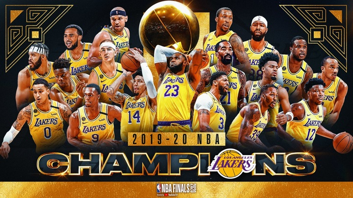
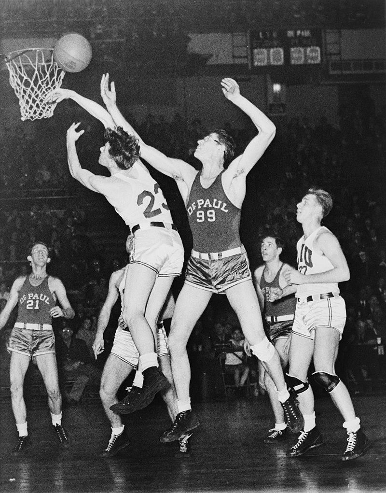
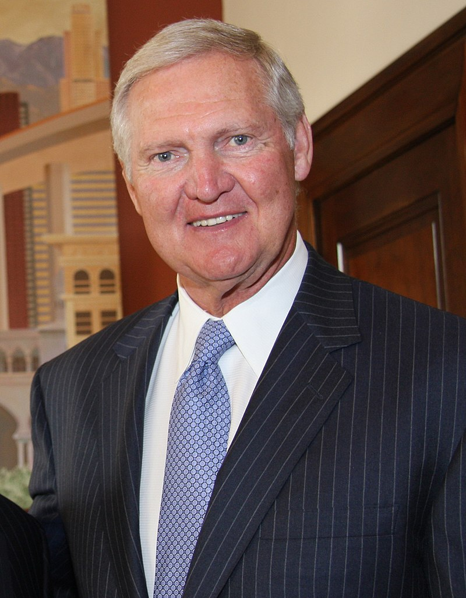
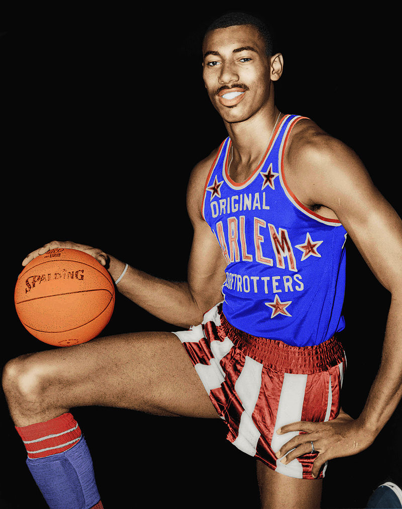
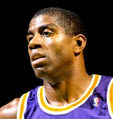
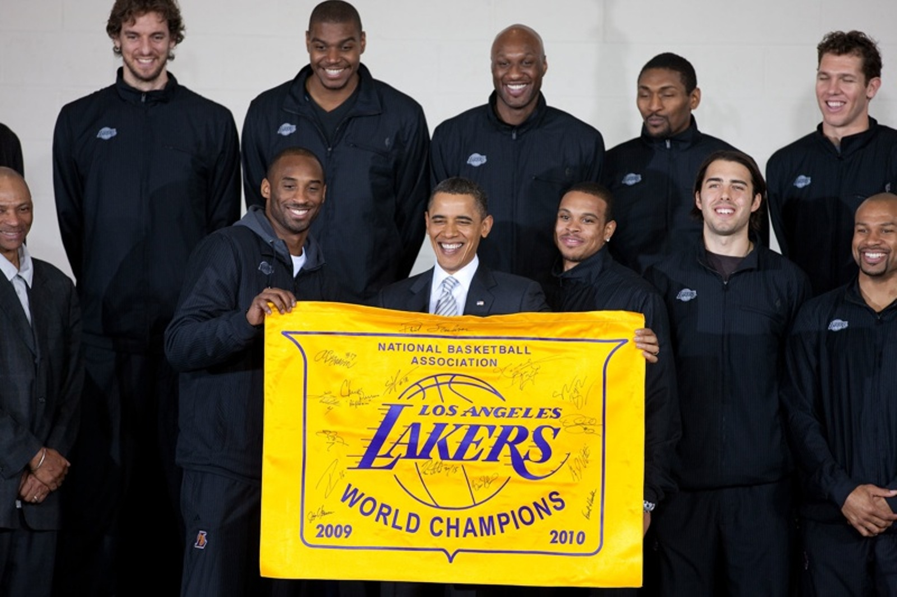
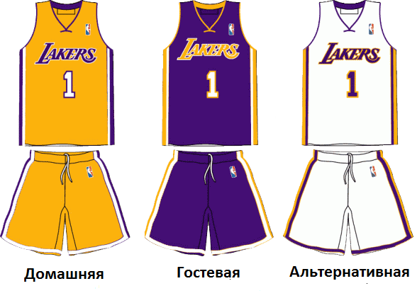

«Лос-Анджелес Лейкерс» (англ. Los Angeles Lakers) — американский профессиональный баскетбольный клуб из Лос-Анджелеса. Выступает в Тихоокеанском дивизионе Западной конференции, в Национальной баскетбольной ассоциации.Домашние игры проводит в «Стэйплс Центр», где также играет ближайший соперник по лиге «Лос-Анджелес Клипперс» и команда НХЛ «Лос-Анджелес Кингз», также помимо них здесь играет женская команда WNBA «Лос-Анджелес Спаркс»[1]. «Лос-Анджелес Лейкерс» одна из самых титулованных команд НБА, у них 17 чемпионств. По состоянию на 2012 год, Лейкерс являются наиболее дорогостоящей командой НБА по данным Forbes, с оценочной стоимостью $ 900 млн
Клуб был основан в 1946 году, в Детройте под названием «Детройт Джемс» (англ. Detroit Gems) и выступал в НБЛ. Через год команда переехала в Миннеаполис, штат Миннесота. Сменив название на «Миннеаполис Лейкерс» (англ. Minneapolis Lakers), в честь огромных грузовых кораблей, использующихся в Великих озёрах, англ. Lake freighter, в буквальном переводе — «Озёрный грузовик», также англ. Laker, «озёрник». В Миннеаполисе «Лейкерс» выиграли 5 чемпионских титулов. Центровой той команды Джордж Майкен впоследствии был признан главной звездой за всю историю НБА на официальном сайте лиги[3]. Из-за финансовых трудностей в конце 1950-х, команда вынужденно переезжает в Лос-Анджелес и обретает нынешнее название, выступая здесь с сезона 1960/1961.
При вошедших впоследствии в Зал славы Элджине Бэйлоре и Джерри Уэсте, команда 6 раз выходила в финал НБА, уступив все 6 раз «Бостону». С этого началось главное противостояние в истории лиги, между «Селтикс» и «Лейкерс». В 1968 году «Лейкерс» заполучили центрового Уилта Чемберлена, четырежды признававшимся самым ценным игроком НБА. При нём, команда выходила в финал НБА дважды, в 1969 и 1970 году. Лишь с третий попытки «Лейкерс», ведомые Чембрленом, смогли выиграть титул чемпиона НБА. Шестой раз вообще и 1-й, с момента переезда в Лос-Анджелес и под руководством нового главного тренера Билла Шермана. После ухода Уэста и Чемберлена, команда приобрела Карима Абдул-Джаббара, продолжив традицию звездных центровых, вслед за Майкеном и Чемберленом. Он также, несколько раз признавался самым ценным игроком НБА, но не мог в одиночку решить судьбу финалов в конце десятилетия. В 1980-х годах, «Лейкерс» получили прозвище «Шоутайм», благодаря игре Мэджика Джонсона. «Лейкерс» ведомые тандемом Джаббар-Джонсон, выиграли 5 титулов чемпиона НБА за отрезок времени длиной в девять лет, включая первую победу в финальной серии НБА над «Селтикс», в 1985 году. Из этой команды Джонсон, Джаббар, Джеймс Уорти и главный тренер Пэт Райли вошли в Зал Славы. После завершения карьер главных звезд команды, ухода Райли и ряда ведущих игроков для «Лейкерс» начались тяжелые бестрофейные годы, завершившиеся после подписания контрактов с Шакилом О’Нилом, Коби Брайантом в 1996 году и назначением Фила Джексона на пост главного тренера в 1999 году. Эта команда оформила т. н. три-пит, выиграв три титула чемпиона НБА подряд и ещё один раз выйдя в финал в 2004 году. После чего команду покинул О’Нил и на один год Джексон. После непопадания команды в плей-офф НБА в 5 раз за историю, Фил Джексон вернулся на пост главного тренера. Он ещё раз, трижды подряд выводил «Лейкерс» в финал НБА. Из которых команда проиграла один, в 2008 году «Селтикс» и взяла реванш в 2010-м.
Коллективу из Лос-Анджелеса также принадлежит рекорд самой продолжительной победной серии в НБА из 33-х матчей, установленный в сезоне 1971/1972[4]. Помимо этого, 6 игроков и 4 главных тренера входят в Зал Славы. Четыре игрока «Лейкерс», выступавшие за команду получали награду самого ценного игрока НБА, это: Карим Абдул-Джаббар, Мэджик Джонсон, Шакил О’Нил и Коби Брайант. В общей сложности выиграв 8 наград[5].
 «Лос-Анджелес Лейкерс» были основаны в 1946 году, когда Бен Берджер (англ.)рус. и Моррис Челфен (англ.)рус. приобрели команду НБЛ «Детройт Джемс», за 15 тысяч долларов[6]. В течение сезона 1946/47, команда переехала в Миннеаполис[7][8]. «Лейкерс», у которых уже был сформированный состав с форвардом Джимом Поллардом и разыгрывающим Гермом Шкефером, приобрели центрового Джорджа Майкена, который стремительно стал ключевой фигурой в игре команды. «Лейкерс», ведомые Майкеном, в дебютном же для него сезоне, одержали победу в дивизионе (43—17)[9]. До этого, в 1948 году выиграв последний Всемирный профессиональный баскетбольный турнир в Чикаго, а став его первой и единственной командой выигравший, обыграв сборную «Всех Звёзд» студенческого баскетбола[10]. В 1949 году в финале БАА «Лейкерс» продолжили свой триумфальный ход, выиграв у «Вашингтон Кэпитолс (англ.)рус.» (4-2). В следующем сезоне, команда стала чемпионом Западного Дивизиона (51 победа 17 поражений). В плей-офф команда победила «Индианаполис Олимпианс» в трех играх, но проиграла «Рочестер Роялс» в следующем раунде. В сезон 1951/52 года «Лейкерс» выиграли 40 игр, закончив сезон на втором месте в дивизионе. В финале НБА «Лейкерс» встретились с «Нью-Йорк Никс» и одержали победу в семи играх. В сезоне 1952-53 года команда прошла в финал НБА где снова встретилась с «Нью-Йорк Никс». «Лейкерс» победили в четырёх играх, уступив лишь одну. Клайд Лавллитт, выбранный на драфте в 1952 году, помог команде одержать победу в Западном Дивизионе. Команда выиграла свой третий чемпионат подряд в 1950-х годах, победив в финале «Сиракьюс Нэшнлз» в семи играх. После ухода Майкена в межсезонье 1954 года, команда ослабла, но одержала 40 побед в регулярном сезоне. Выиграв у «Роялз» в первом раунде плей-офф, «Лейкерс» проиграли «Форт-Уэйн Пистонс» в следующем раунде. В 1959 году «Лос-Анджелес Лейкерс», ведомые новичком Элджином Бэйлором, пробились в Финал НБА, где уступили «Бостон Селтикс» в серии со счётом 4-0.
Последний сезон в Миннеаполисе «Лос-Анджелес Лейкерс» завершили с разницей побед и поражений 25-50. 18 января 1960 года команда была потеряна во время поездки в Сент-Луис, когда их самолёт совершил аварийную посадку. Снежная буря отклонила пилота на 150 миль от курса и он был вынужден сесть в кукурузном поле. Никто не погиб. Их рекорд позволил им получить второй номер на драфте НБА 1960 года. Команда выбрала Джерри Уэста из Университета Западной Виргинии. Летом 1960 года «Лос-Анджелес Лейкерс» стали первой командой НБА с Западного побережья, когда владелец клуба Боб Шорт решил перевезти команду в Лос-Анджелес. Благодаря 34,8 очкам и 19,8 подборам Бэйлора в среднем за матч, «Лейкерс» одержали на 11 побед больше, чем в прошлом сезоне. 15 ноября Бэйлор установил новый рекорд результативности НБА, когда набрал 71 очко и 25 подборов в матче против «Нью-Йорк Никс». Сделав это, он превзошел свой прошлый рекорд НБА в 64 очка. В результате «Лейкерс» вышли в плей-офф. Они победили в полуфинале конференции «Детройт» со счетом 3-2, но в финале конференции уступили «Сент-Луису» (4-3). В сезоне 1961/62 во главе с Бэйлором и Уэстом (38,3 и 30,8 очков за матч соответственно) «Лос-Анджелес Лейкерс» добились разницы побед и поражений 54-26 и добрались до финала. В пятой игре серии против «Бостон Селтикс» Бэйлор сделал 22 подбора и установил рекорд НБА по количеству очков в финальной игре (61 очко, рекорд не побит до сих пор). Но «Лейкерс» все равно уступили «Бостону» в седьмой игре, проиграв в овертайме три очка. Фрэнк Селви на последней секунде 4-й четверти не попал с 18 футов бросок без сопротивления. В сезоне 1962/63 «Лос-Анджелес» выиграл 53 игры. Бэйлор набирал 34 очка за матч, Уэст — 27,1, но финале плей-офф «Лейкерс» вновь проиграли «Селтикс» в шести играх. Сезон 1963/64 завершился для команды в первом раунде плей-офф против «Сент-Луиса». В сезоне 1964—1965 команда выиграла 49 игр. В финале конференции «Лос-Анджелес» победил 4-2 «Балтимор», а Джерри Уэст установил рекорд, набирая за матч по 46,3 очка. Но в финале — очередное поражение от «Селтикс» в пяти играх. В сезоне 1965/66 «Лос-Анджелес» вновь проиграл в финале НБА «Бостону» в семи матчах. Сезон 1966/67, несмотря на 36 побед в регулярном чемпионате, завершился для команды поражением в первом раунде плей-офф от команды «Сан-Франциско» с общим счетом 3-0. Следующий сезон — поражение в финале плей-офф от «Селтикс». В 1967 году «Лейкерс» переехали на новую арену «Форум» после семи сезонов, проведенных на «Los Angeles Memorial Sports Arena

9 июля 1968 года, команда приобрела Уилта Чемберлена из «Филадельфии» за Даррелла Имхоффа, Арчи Кларка и Джерри Чемберса. В своем первом сезоне за «Лос-Анджелес Лейкерс» Чемберлен установил командный рекорд средней результативности за матч — 21,1 очко за матч. Уэст, Бэйлор и Чемберлен забирали более 20 очков и их команда выиграла свой дивизион. «Лейкерс» и «Бостон» снова встретились в финале, и «Лос-Анджелес» имел преимущество своей площадки против «Бостона» в первой части их противостояния. Они выиграли первую игру, Джерри Уэст набрал 53 очка. Но в итоге команда из Лос-Анджелеса проиграла серию со счетом 4-3, несмотря на то, что после пяти матчей «Лейкерс» повёл 3-2. Таким образом, «Бостон» в 11-й раз за 13 сезонов выиграл финал НБА. Уэст был признан первым в истории самым ценным игроком финала. До сегодняшнего дня это единственный случай награждения игрока проигравшей команды. В 1970 году команда вновь достигла финала и впервые за 16 лет она играла не с «Бостон Селтикс»: соперником «Лейкерс» стала команда «Нью-Йорк Никс». «Никс» победили со счетом 4-3. В следующем сезоне в финале Западной конференции «Лос-Анджелес» был побежден командой «Милуоки Бакс», ведомой великим Каримом Абдул-Джаббаром.
Гэйл Гудрич провел за «Лейкерс» 9 сезонов, в 1960-х и 1970-х годах. Также вместе с командой, сыграв в 4 финалах НБА.
Сезон 1971/72 принес ряд изменений. Владелец клуба Джек Кент Кук пригласил на должность главного тренера Билла Шермана. В начале сезона Элджин Бэйлор, узнав о проблемах с ногами, объявил об окончании карьеры. Шерман улучшил дисциплину в команде. Он привнес в клуб концепцию «Shootaround[en]», когда игроки должны были прибывать на арену перед игрой рано утром и тренировать броски. «Лейкерс» выиграли 14 игр подряд в ноябре и все 16 декабрьских игр. Победная серия продлилась на три матча в 1972 году, но 9 января «Милуоки Бакс» обыграли «Лейкерс» со счетом 120:104 и прервали эту серию. Выиграв таким образом 33 игры, «Лос-Анджелес» установил рекорд американского спорта по продолжительности победной серии (рекорд был побит только в сезоне World TeamTennis 2013 года командой «Вашингтон Каслс», выигравшей 34 матча регулярного сезона подряд[14]). Всего в этом сезоне «Лейкерс» выиграли 69 игр, установив ещё один рекорд НБА (рекорд был побит только в сезоне 1995/96 клубом «Чикаго Буллз»). Чемберлен набирал в среднем только 14,8 очков за матч и совершал 19,2 подбора за игру. Уэст отдавал в этом сезоне 9,7 передач за матч и набирал более 25 очков за встречу. Он был назван лучшим игроком Матча Всех Звезд. В течение сезона команда регулярно набирала более 100 очков за матч и в конце сезона Билл Шерман был признан тренером года в НБА. «Лейкерс» вновь достигли финала, в котором им вновь противостояла команда «Нью-Йорк Никс». В итоге «Лейкерс» одержали победу со счетом 4-1. Чемберлен набрал 24 очка и сделал 29 подборов в пятой игре и стал самым ценным игроком финала.
«Лейкерс» выиграли 60 игр в сезоне 1972/73 и вновь победили в Тихоокеанском дивизионе. Уилт Чемберлен в финальной игре установил до сих пор не побитый рекорд НБА по проценту попаданий — 72,7 %. В полуфинале конференции «Лос-Анджелес» переиграл «Чикаго Буллз» со счетом 4-3, в финале конференции обыгран «Голден Стэйт Уорриорз» — 4-1, но в финале плей-офф «Нью-Йорк Никс» обыграли «Лейкерс» в пяти встречах.

На Драфте НБА 1979 года, «Лос-Анджелес» выбрал разыгрывающего Мэджика Джонсона из штата Мичиган, под первым пиком. Потребовалось время, для того чтобы Джонсон смог приспособиться и проявить все свой лучшие качества, так как его часто заставали врасплох. Но когда он приспособился к игре команды, сразу стал ключевым игроком «Лейкерс». В том сезоне Лос-Анджелес выиграл 60 игр в регулярном чемпионате, а также в 6 матчах финала НБА победил «Филадельфию» (4-2). Джонсон был признан MVP финала, после того как центровой Абдул-Джаббар травмировался в шестой игре, на его счету 42 очка, 15 подборов и семь передач. Следующий сезон 1980/81 команда провалила, во много из-за того что Меджик Джонсон был вынужден пропустить большую часть сезона, из-за травмы колена. «Лейкерс» заняли 2 место вслед за «Финикс Санз» в Тихоокеанском дивизион, с 54 победами и 28 поражениями. В плей-офф «Рокетс», ведомые Мозесом Мэлоуном, победили «Лос-Анджелес» в первом раунде (3-4). В начале сезона 1981/82, Джонсон в СМИ подвергнул критике работу главного тренера Паула Вестхида, после чего потребовал запрос на обмен в другой клуб. Вестхид был уволен вскоре после критики Джонсона, и хотя владелец «Лейкерс» Джерри Басс заявил, что комментарии Джонсона не повлияли на это фактор в процессе принятия решений, Мэджик был раскритикован в национальных средствах массовой информации и освистан, на гостевых и домашних играх команды. Басс назначил главным тренером Пэта Райли, а помощником главного тренера Джерри Уэста 19 ноября, и команда выиграла следующие 17 из 20 игр. «Лейкерс» получили прозвище «Шоутайм», за игру показываемую Мэджиком Джонсоном. Команда выиграла Тихоокеанский дивизион и разгромила «Санз» (4-0) и «Спёрс» (4-0). «Лос-Анджелес» продлил беспроигрышную серию до 9 игр, выиграв первый матч финала НБА у «Филадельфии». «Лейкерс» выиграли финал (4-2), закончив плей-офф с разницей побед к поражениям, 12-2. На драфте в 1982 году, «Лейкерс» выбрали под первым общим номером Джеймса Уорти из Северной Каролины. «Лос-Анджелес» выиграл Тихоокеанский дивизион (58-24), но в конце регулярного сезона Уорти получил травму ноги, из-за чего пропустил остаток сезона. Тем не менее, команде это не помешало выйти в финал НБА 1983 и снова там сыграть с «Филадельфией», победив перед этим «Портленд» и «Сан-Антонио» в предыдущих двух раундах. Но в финале «Лейкерс» были разгромлены (0-4). По окончании сезона Уэст покинул команду, где его заменил Шарман. Сезон 1983/84 «Лос-Анджелес» закончил (54-28), финале пришлось играть с «Бостоном» впервые с 1969 года. Они выиграли две первые из трех игра. Грязный фол Кевина Макхейла, похожий на прием рестлера, против Курта Рэмбиса, лишил «Лейкерс» игрока, который выполнял огромный объём черновой работы, что стало поворотным событием в финальной серии[17]. «Бостон» выиграл три из четырёх последующих игр, и в дальнейшим «Селтикс» выиграли серию (3-4)[18]. Но команда не сломалась, а воспользовавшись обидным поражением в финале как мотиваций, «Лос-Анджелес» выиграл Тихоокеанский дивизион четвёртый год подряд, проиграв всего два раза в плей-офф Западной конференции. В финале «Бостон Селтикс» вновь стал последим препятствием на пути к чемпионству перед «Лейкерс». «Лос-Анджелес» был разгромлен в стартовой игре финальной серии со счетом 148—114, названый как «Memorial Day Massacre» — с анг. — «Бойня в День памяти». Но команду это не сломало, кстати ещё сказалось и скорое восстановление 38-летнего ветерана и обладателя MVP финала Карима Абдул-Джаббара, что в итоге и помогло победить «Селтикс» в шести матчах. «Лос-Анджелесе Лейкерс» стал единственной гостевой командой, оформившей чемпионство в «Бостон Гарден». Джеймс Уорти задрафтован Лос-Анджелесом под первым общим номером в 1982 году. В сезоне 1985/86, «Лейкерс» начали с 24 побед и всего 3 поражений. В регулярном чемпионате они выиграли 62 игры и свой пятый подряд титул чемпиона в дивизионе. Однако, теперь «Лейкерс» в плей-офф дошли только до финала Конференции, где проиграли в 5 играх «Рокетс». «Хьюстон» выиграл, когда Ральф Сэмпсон во всех 5 играх серии набирал не меньше 20 очков, в том числе и на Форуме. До начала сезона 1986/87, у «Лос-Анджелеса» перешел Эй Си Грин в стартовый состав, также был приобретен Мичел Томпсон у «Спёрс». Мэджик Джонсон был назван первый раз самым ценным игроком в Лиги, «Лейкерс» сыграли с отношением побед к поражения регулярном чемпионате (65-17) и помимо этого Майкл Купер был назван «Лучшим оборонительным игроком НБА». Перед началом сезона Райли принял решение сместить акцент игры на Джонсона, нежели на ветерана Абдул-Джаббара. «Лейкерс» вышли в финал НБА, по пути переиграв «Наггетс», также «Уорриорз» в пяти играх, а в финале Западной конференции переиграв «Суперсоникс». «Лос-Анджелес Лейкерс» победили «Бостон» в первых двух матчах финала, а затем команды выиграли следующие четыре игры по два раза, и калифорнийцы победили в своем втором чемпионате за три года. Серия была отмечена игрой Джонсона как бросками «baby hook», что помогло выиграть четвертую игру в «Бостон Гарден» за две секунды до конца матча. Джонсон получил награды MVP финала НБА и MVP сезона. На праздновании чемпионства «Лейкерс» в Лос-Анджелесе, главный тренер Райли дерзко заявил, что «Лос-Анджелес» будет постоянно выигрывать чемпионство НБА. В 1987/88 сезоне «Лейкерс» победили седьмой раз подряд в Тихоокеанском дивизионе, а в финале НБА 1988 года встретились с «Детройт Пистонс». «Лос-Анджелес» переиграл соперника в семи матчах серии, Джеймс Уорти в седьмой игре своим трипл-даблом выиграл награду MVP финала. В сезоне 1988/89, «ЛА Лейкерс» выиграл 57 игр. В плей-офф «Лекйкерс» дошли до финала НБА, где снова сыграли с «Детройт Пистонс». Травмы Байрона Скотта и Мэджика Джонсона не позволили «Лейкерс» выиграть.

После возвращения Дерека Фишера, «ЛА Лейкерс» начали сезон 2007/08 с результатом 25-11. В январе центровой Эндрю Байнум, который к тому моменту был лучшим по проценту попадания с игры в лиге, получил травму колена, выбыв на год. 1 февраля команду пополнил тяжелый форвард Пау Газоль из «Мемфис Гриззлис». Закончив сезон со счетом 57-25, «Лейкерс» заняли первое место в Западной конференции. Брайант был признан MVP лиги, став первым игроком «ЛАЛ» завоевавшим эту награду с 2000 года. В плей-офф команда миновала «Наггетс» в четырёх играх (4-0), «Джаз» в шести (4-2) и действующего чемпиона НБА «Спёрс» в пяти (4-1), но финале проиграла серию «Селтикс» (2-4). Сезон 2008/09 «Лос-Анджелес Лейкерс» закончили с разницей побед к поражениям 65-17 — лучшим показателем в Западной конференции. В плей-офф «Лейкерс» поочередно победил «Юту» (4-1), «Хьюстон» (4-3) и «Денвер» (4-2), выиграв Западную Конференцию и выйдя в финал НБА второй год подряд. В финале команда из Лос-Анджелеса выиграла свой пятнадцатый чемпионский титул, победив «Орландо Мэджик» (4-1). Брайант был признан MVP финала, впервые в своей карьере. «Лейкерс» обменяли Тревора Ариза на Рона Артеста (ныне Метта Уорлд Пис) и закончили 2009/10 сезон с лучшими показателями в Западной конференции в третий раз подряд (57-25). 13 января 2010 года Лос-Анджелес стал первой командой в истории НБА, выигравшей 3000 игр регулярного сезона, победив «Даллас Маверикс»100-95. Они победили «Оклахому-Сити Тандер», «Юту Джаз» и «Финикс Санз» в плей-офф Западной конференции. В финале «Лейкерс» играли с «Бостон Селтикс» 12-й раз. Команда сплотилась, отставая на 13 очков в четвёртой четверти седьмой игры, и смогла победить «Селтикс». Эта победа стала 16-м титулом НБА и 11 с момента переезда в Лос-Анджелес. Брайант был назван MVP финала второй год подряд. После долгих размышлений главный тренер Фил Джексон вернулся в 2010/11 сезоне. В плей-офф «Лейкерс» победили «Нью-Орлеан Хорнетс» в первом раунде, но уже во втором раунде они были разгромлены «Далласом Маверикс» в четырёх играх. По окончании сезона было объявлено, что Джексон покинет «Лейкерс» и не вернется на пост главного тренера.
Названы в честь в честь огромных грузовых кораблей, использующихся в Великих озёрах, англ. Lake freighter, в буквальном переводе — «Озёрный грузовик», также англ. Laker, «озёрник»(штат Миннесота, где команда базировалась в первые годы существования[7]).Цветами команды являются фиолетовый, золотой и белый[94]. Логотип состоит из названия команды «Лос-Анджелес Лейкерс», написанного фиолетовым цветом с золотыми краями букв.Фиолетовая форма является выездной, золотая — домашней. Также у команды есть третья, белая форма, которая используется для воскресных и праздничных домашних игр.
| Гравець | Рiст | Вага | Звiдки |
|---|---|---|---|
| Коул Свидер | 206 см | 100 кг | Сиракьюс |
| Расселл Уэстбрук | 191 см | 91 кг | УКЛА |
| Скотти Пиппен, мл | 191 см | 77 кг | Вандербильт |
| Энтони Дэвис | 208 см | 115 кг | Кентукки |
| Лонни Уокер | 196 см | 93 кг | Майами |
| Леброн Джеймс | 206 см | 113 кг | Сент-Винсент — Сент-Мэри (Огайо) |
| Кент Бэйзмор | 193 см | 88 кг | Олд-Доминион |
| Кендрик Нанн | 188 см | 86 кг | Окленд |